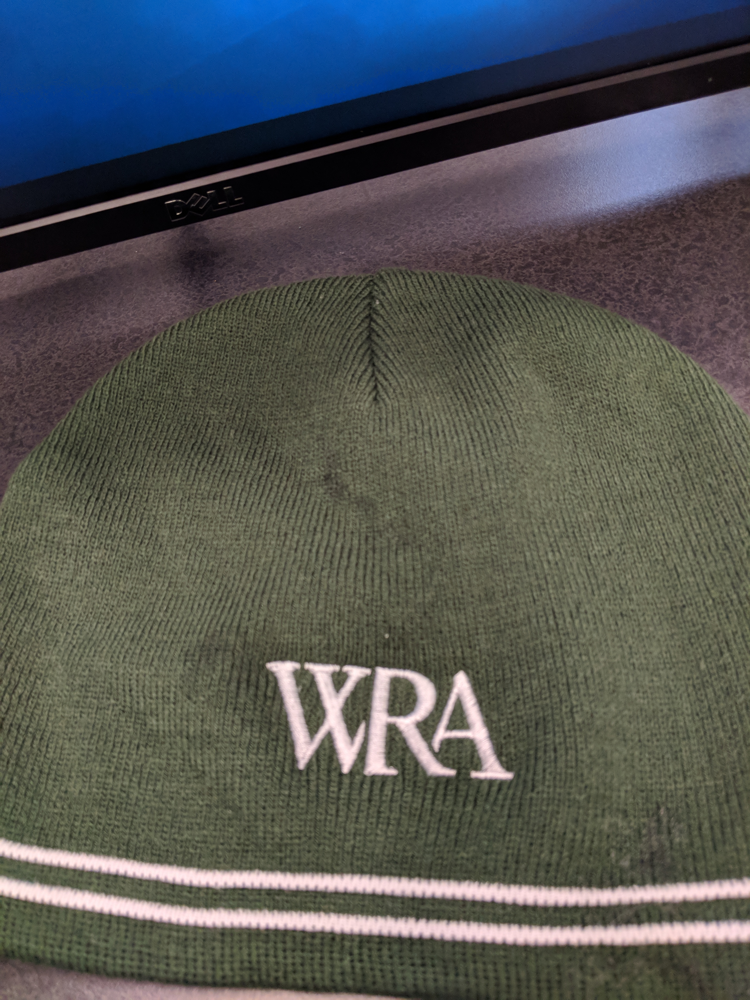

Not a big fan of sewing, but it was pretty easy. First I picked out my cloths, then I sewed them together in a certain manner. Then I French seamed the pillow case so that the lines would not be seen on the outside. The hardest part was actually French seaming it, because I always lost track of where my seam should be. Sewing for the most part was pretty easy. I just needed to line up the needle and where I wanted to sew and bam, done. I learned how to fix a sewing machine if the thread fell off.
The hat was used in the embroiderig process. The backing used was the typical cloth and the water dissolvable fabric. The backing is to smoothen out the contact with the hat and your head. First I snapped my hat along with the backing onto a magnetic frame. Then I brought it to the machine and chose my design. After that, I waited for the machine to finish and then I cut out the excess backing. Finally I used water to dissolve the water dissolvable backing.